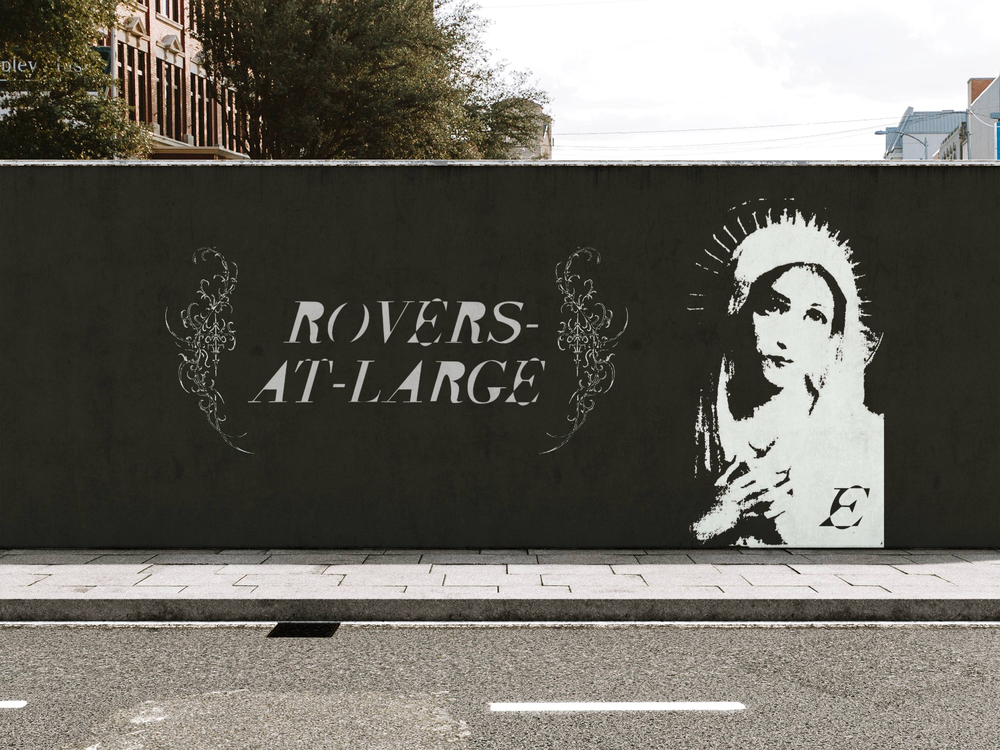
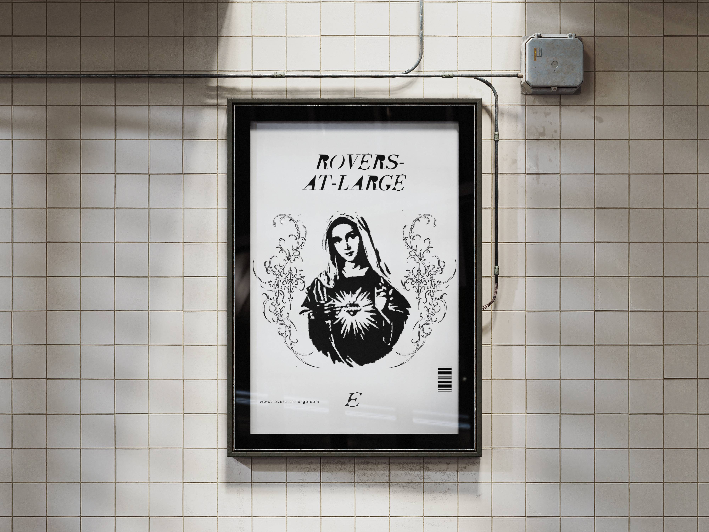
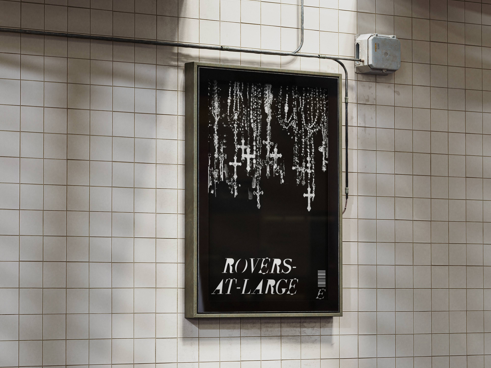

Nuestro sistema de logos traduce nuestra ideología: formas ambiguas y oscuras que representan la otredad y lo no categorizable, en tensión con un sello más visible que equilibra pertenencia y diferenciación. Más que identificar, funcionan como un código visual para quienes comparten esta sensibilidad.

¿QUIÉNES SOMOS?
ROVERS-AT-LARGE ES UNA PLATAFORMA EDITORIAL QUE NACE PARA DAR LUGAR A LO QUE QUEDA FUERA: LO INCÓMODO, LO AMBIGUO, LO NO CATEGORIZABLE. EXISTIMOS PARA VISIBILIZAR LA OTREDAD DENTRO DE LAS ESCENAS CREATIVAS CONTEMPORÁNEAS Y CONSTRUIR UNA COMUNIDAD ALREDEDOR DE AQUELLO QUE NO BUSCA ENCAJAR, SINO REDEFINIR. →
¿QUÉ HACEMOS?
SOMOS UNA REVISTA DIGITAL MULTIDISCIPLINARIA QUE REÚNE FOTOGRAFÍA, TEXTOS, CULTURA, AUDIOVISUAL, GUIONES EN BÚSQUEDA DE FINANCIAMIENTO Y PROPUESTAS DE MODA Y DISEÑO DE ARTISTAS EMERGENTES. CURAMOS Y PUBLICAMOS SEMANALMENTE, DANDO VISIBILIDAD A VOCES Y PROYECTOS QUE EXPANDEN LO CREATIVO FUERA DE LO ESTABLECIDO.

Seguro te estás preguntando: ¿A mí por qué me interesa? ¿O qué sigue ahora?
La respuesta es más simple de lo que crees: Tu talento necesita un espacio. Es momento de empezar a subir tus proyectos.

¿POR QUÉ PUBLICAR CON NOSOTROS?
En Rovers-At-Large, cada proyecto se publicará como parte de un post colaborativo de Instagram, curado por los miembros del colectivo y subido desde la cuenta de Rovers-At-Large. No somos una plataforma grande, y justo por eso esto funcionará distinto: vamos a crecer entre todos.
Usaremos Instagram como nuestra propia galería, pero es esencial que las publicaciones colaborativas se suban tanto en la cuenta del colectivo como desde las cuentas principales de cada participante. Las cuentas secundarias no sirven, porque el alcance real viene de la interacción con las audiencias de nuestros perfiles principales. Queremos gente que se enorgullezca de su arte y lo presente desde su perfil fuerte, no escondido en una cuenta alterna.
No se trata de decidir quién ve tu trabajo, se trata de llegar a la mayor cantidad de gente posible. Si quieres vivir de tu arte, tu perfil debe convertirse en el lugar donde se construya tu futuro.
¿QUE GANAS?
Tu proyecto aparecerá en el feed de las audiencias de todos los colaboradores, amplificando tu alcance y el de ellos a la vez. Además, crearás portafolio, generarás experiencia, trabajarás en tu constancia y mejorarás tu proceso creativo. Es momento de dejar de procrastinar y empezar a hacer.
Este proyecto no te va a hacer famoso, pero por algún lugar se empieza.
Recuerda que todo es cringe, hasta que funciona. Y si de verdad quieres que funcione, este es un pedazo de ese largo camino que te queda por recorrer. Hazlo junto a gente que está viviendo lo mismo que tú.

Mándanos tu información en la sección de abajo
CUÉNTANOS DE TI
Pronto sabrás más de nosotros.